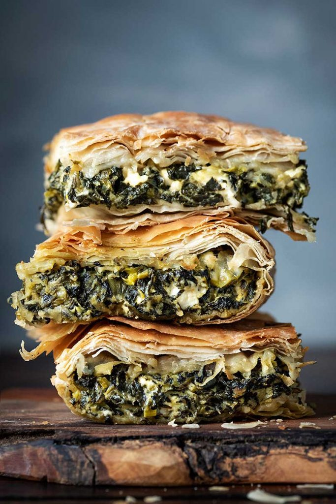

Crispy Greek Pie

Crispy pie, normally called Spanakopita but i didn't want to type that out multiple times in the source code
Serves 4 (or so they say)
ingredients
- 200g spinach
- 17g sundried tomatoes, roughly chopped
- 100g feta cheese, crumbled
- 2 eggs
- 125g filo pastry
Instructions
- Wilt the Spinach in a large pan with a tbsp of water.
Allow to cool, drain and squeeze as much water as possible from the spinach then chop.
- Add to bowl with feta, tomatoes, and eggs. season.
- Unroll the filo pastry, add overlapping sheets to the bottom of a 22cm loosebottomed cake tin, brush with oil from teh sundried tomato jar.Arrange so that some hangs over the side of the tin.
Keep placing until you have the layers three sheets thick.
- Spoon the spinach/feta mix into the middle. Pull the pastry to cover, adding more layers if necessary to make sure the filling is covered.Brush with more oil
- Stick it in a 180c preheated oven, and cook for about 30 minutes until the pastry is brown and crisp.